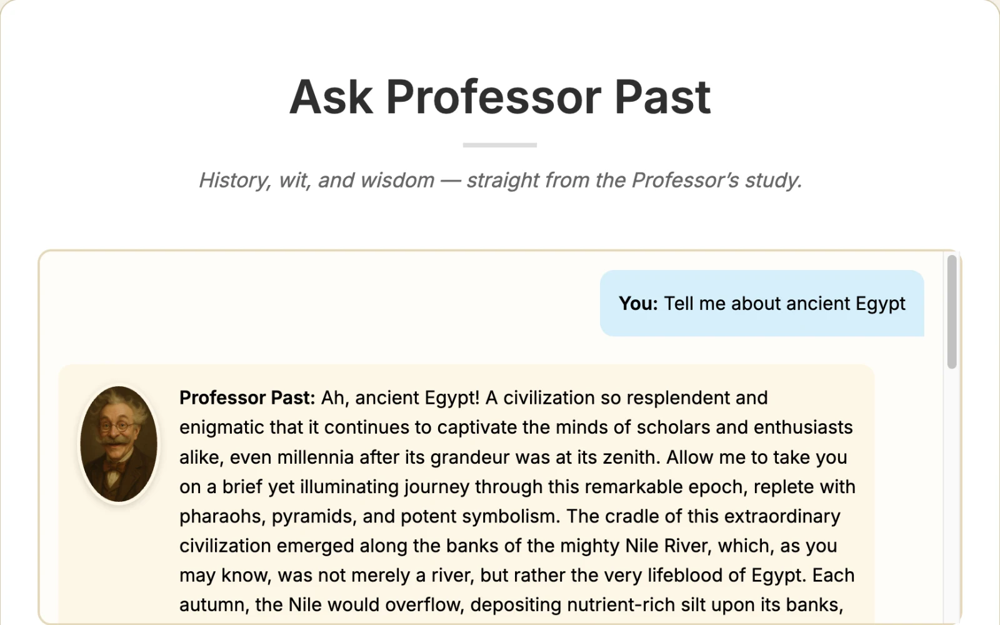

Threshold
A clearer view of what moving could cost.
Product · Data visualisation · 2026
Case study →
Everything I’ve built that I’d happily talk through.
A clearer view of what moving could cost.

Every number shows where it came from and how old it is.

Breaks that match how long you actually focused.

A household coordination prototype, built for coursework.

A tested C# Web API for managing risk events.

History you can talk to. Version 1; I’m rebuilding it.